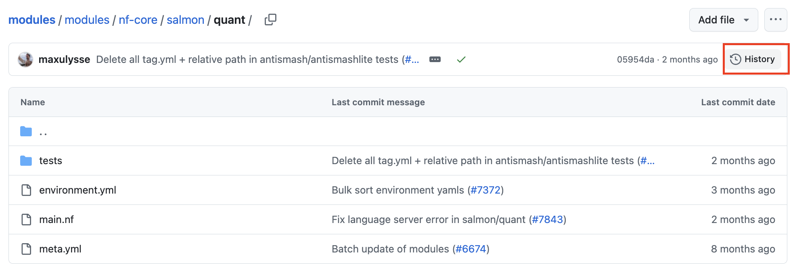

Nextflow Development - Developing Modularised Workflows
- Develop a basic Nextflow workflow with nf-core templates
- Test and set up profiles for a Nextflow workflow
- Create conditional processes, and conditional scripts within a processs
- Read data of different types into a Nextflow workflow
5.1 nf-core modules
Previously, we used the nf-core pipelines command to create our initial pipeline template. We can now add modules to this template using nf-core modules. This command also contains subcommands, which can be used to manage modules.
,--./,-.
___ __ __ __ ___ /,-._.--~\
|\ | |__ __ / ` / \ |__) |__ } {
| \| | \__, \__/ | \ |___ \`-._,-`-,
`._,._,'
nf-core/tools version 3.2.0 - https://nf-co.re
Usage: nf-core modules [OPTIONS] COMMAND [ARGS]...
Commands to manage Nextflow DSL2 modules (tool wrappers).
╭─ For pipelines ───────────────────────────────────────────────────────────────────────────╮
│ list List modules in a local pipeline or remote repository. │
│ info Show developer usage information about a given module. │
│ install Install DSL2 modules within a pipeline. │
│ update Update DSL2 modules within a pipeline. │
│ remove Remove a module from a pipeline. │
│ patch Create a patch file for minor changes in a module │
╰───────────────────────────────────────────────────────────────────────────────────────────╯
╭─ Developing new modules ──────────────────────────────────────────────────────────────────╮
│ create Create a new DSL2 module from the nf-core template. │
│ lint Lint one or more modules in a directory. │
│ test Run nf-test for a module. │
│ bump-versions Bump versions for one or more modules in a clone of the nf-core/modules │
│ repo. │
╰───────────────────────────────────────────────────────────────────────────────────────────╯
╭─ Options ─────────────────────────────────────────────────────────────────────────────────╮
│ --git-remote -g TEXT Remote git repo to fetch files from │
│ --branch -b TEXT Branch of git repository hosting modules. │
│ --no-pull -N Do not pull in latest changes to local clone of modules │
│ repository. │
│ --help -h Show this message and exit. │
╰───────────────────────────────────────────────────────────────────────────────────────────╯To check what modules have been added into our pipeline run nf-core modules list local within the pipeline folder.
cd ./nf-core-customrnaseq
nf-core modules list localThis command will output each module that is part of the pipeline, the source repository, version, message at last commit, and the date it was last modified.
,--./,-.
___ __ __ __ ___ /,-._.--~\
|\ | |__ __ / ` / \ |__) |__ } {
| \| | \__, \__/ | \ |___ \`-._,-`-,
`._,._,'
nf-core/tools version 3.2.0 - https://nf-co.re
There is a new version of nf-core/tools available! (3.2.1)
INFO Repository type: pipeline
INFO Modules installed in '.':
┏━━━━━━━━━━━━━┳━━━━━━━━━━━━━━━━━┳━━━━━━━━━━━━━┳━━━━━━━━━━━━━━━━━━━━━━━━━━━━━━━━┳━━━━━━━━━━━━┓
┃ Module Name ┃ Repository ┃ Version SHA ┃ Message ┃ Date ┃
┡━━━━━━━━━━━━━╇━━━━━━━━━━━━━━━━━╇━━━━━━━━━━━━━╇━━━━━━━━━━━━━━━━━━━━━━━━━━━━━━━━╇━━━━━━━━━━━━┩
│ fastqc │ nf-core/modules │ 0810805 │ use detailed profiles in │ 2024-12-13 │
│ │ │ │ tests/nf-test.config (#7207) │ │
│ multiqc │ nf-core/modules │ f0719ae │ bump multiqc 1.26 to 1.27 │ 2025-01-27 │
│ │ │ │ (#7364) │ │
└─────────────┴─────────────────┴─────────────┴────────────────────────────────┴────────────┘To obtain a list of all available nf-core modules available, nf-core modules list remote can be used.
5.1.1 Installing modules nf-core modules install
Previously, we created a simple workflow that indexed the transcriptome file (INDEX), performed quantification (QUANTIFICATION) and FastQC (FASTQC) on the sample FASTQ files. Finally, perfomed MultiQC on both the outputs of QUANTIFICATION and FASTQC.
N E X T F L O W ~ version 23.04.1
Launching `rnaseq.nf` [sad_jennings] DSL2 - revision: cfae7ccc0e
executor > local (7)
[b5/6bece3] process > INDEX [100%] 1 of 1 ✔
[32/46f20b] process > QUANTIFICATION (3) [100%] 3 of 3 ✔
[44/27aa8d] process > FASTQC (2) [100%] 3 of 3 ✔We will be recreating these steps, using the nf-core template as a guide.
Recall that when we created each process, we manually defined the input(s) and their structure, the output(s) and their structure, the process script, and any containers required to execute the process. This can become time consuming, especially when creating pipelines with many processes.
Before creating a module ourselves, we should always first check the nf-core modules page to see if the module we are interested in exists.
For our INDEX and QUANTIFICATION processes, let’s check if are already modules that use salmon index and salmon quant.
TO DO Change CONTAINER
process INDEX {
container "<CACHE DIRECTORY>/depot.galaxyproject.org-singularity-salmon-1.10.1--h7e5ed60_0.img"
input:
path transcriptome
output:
path "salmon_idx"
script:
"""
salmon index --threads $task.cpus -t $transcriptome -i salmon_idx
"""
}process QUANTIFICATION {
container "<CACHE DIRECTORY>/depot.galaxyproject.org-singularity-salmon-1.10.1--h7e5ed60_0.img"
input:
path salmon_index
tuple val(sample_id), path(reads)
output:
path "$sample_id"
script:
"""
salmon quant --libType=U \
-i $salmon_index -1 ${reads[0]} -2 ${reads[1]} -o $sample_id
"""
}Similar to nf-core pipelines, nf-core modules also have documentation that specifies the inputs to the process, the outputs to the process, and how to install the module to our pipeline.
To install a module, navigate inside your nf-core pipeline folder. Then, the module can be installed. First, install the SALMON_INDEX module.
cd ./nf-core-customrnaseq
nf-core modules install salmon/indexIf the module has been installed successfully, you will get the following message, which also includes how the module can be included in the analysis script workflows/customrnaseq.nf
,--./,-.
___ __ __ __ ___ /,-._.--~\
|\ | |__ __ / ` / \ |__) |__ } {
| \| | \__, \__/ | \ |___ \`-._,-`-,
`._,._,'
nf-core/tools version 3.2.0 - https://nf-co.re
There is a new version of nf-core/tools available! (3.2.1)
INFO Installing 'salmon/index'
INFO Use the following statement to include this module:
include { SALMON_INDEX } from '../modules/nf-core/salmon/index/main'
By default, the example include command provided by running nf-core modules install will provide the relative output path from the analysis workflow file. Therefore, this can be copied directly into workflows/customrnaseq.nf. Recall that if you are importing the module from within a subworkflow file in the subworkflows folder, you will need to change the relative file path to match the new structure.
If you are installing the module outside of the nf-core pipeline folder, you may see the below message:
,--./,-.
___ __ __ __ ___ /,-._.--~\
|\ | |__ __ / ` / \ |__) |__ } {
| \| | \__, \__/ | \ |___ \`-._,-`-,
`._,._,'
nf-core/tools version 3.2.0 - https://nf-co.re
WARNING 'repository_type' not defined in .nf-core.yml
? Is this repository a pipeline or a modules repository? (Use arrow keys)
» Pipeline
Modules repositoryCancel your nf-core modules install command, navigate inside your pipeline folder, then retry.
Note that this module has been installed inside the modules folder in the pipeline, inside the nf-core subfolder.
modules
└── nf-core
├── fastqc
| ├── ...
├── multiqc
| ├── ...
└── salmon
└── index
├── environment.yml
├── main.nf
├── meta.yml
└── tests
├── main.nf.test
└── main.nf.test.snapExercise: Using the nf-core modules page, find a module that performs salmon quant. Install it to your pipeline, and check what location it has been added. Then, include the module in your analysis workflow script workflows/customrnaseq.nf.
The nf-core SALMON_QUANT module can perform salmon quant.
To install this module, the following command can be ran inside my pipeline folder nf-core-customrnaseq:
nf-core modules install salmon/quant
,--./,-.
___ __ __ __ ___ /,-._.--~\
|\ | |__ __ / ` / \ |__) |__ } {
| \| | \__, \__/ | \ |___ \`-._,-`-,
`._,._,'
nf-core/tools version 3.2.0 - https://nf-co.re
INFO Installing 'salmon/quant'
INFO Use the following statement to include this module:
include { SALMON_QUANT } from '../modules/nf-core/salmon/quant/main'
This module has been successfully installed in the modules folder, inside nf-core.
modules
└── nf-core
├── ...
└── salmon
├── index
│ ├── ...
└── quant
├── environment.yml
├── main.nf
├── meta.yml
└── tests
├── main.nf.test
├── main.nf.test.snap
└── nextflow.configSince the example include command provided by running nf-core modules install will provide the relative output path from the analysis workflow file, the following can be copied directly into workflows/customrnaseq.nf.
include { SALMON_QUANT } from '../modules/nf-core/salmon/quant/main' We can now list all the modules installed in our pipeline:
nf-core modules list local
,--./,-.
___ __ __ __ ___ /,-._.--~\
|\ | |__ __ / ` / \ |__) |__ } {
| \| | \__, \__/ | \ |___ \`-._,-`-,
`._,._,'
nf-core/tools version 3.2.0 - https://nf-co.re
INFO Repository type: pipeline
INFO Modules installed in '.':
┏━━━━━━━━━━━━━━┳━━━━━━━━━━━━━━━━━┳━━━━━━━━━━━━━┳━━━━━━━━━━━━━━━━━━━━━━━━━━━━━━━━━━━━━━━━━━━━━━━━━━━━━━━━━━━━━━━━━━━━━━━━━━━━━┳━━━━━━━━━━━━┓
┃ Module Name ┃ Repository ┃ Version SHA ┃ Message ┃ Date ┃
┡━━━━━━━━━━━━━━╇━━━━━━━━━━━━━━━━━╇━━━━━━━━━━━━━╇━━━━━━━━━━━━━━━━━━━━━━━━━━━━━━━━━━━━━━━━━━━━━━━━━━━━━━━━━━━━━━━━━━━━━━━━━━━━━╇━━━━━━━━━━━━┩
│ fastqc │ nf-core/modules │ 0810805 │ use detailed profiles in tests/nf-test.config (#7207) │ 2024-12-13 │
│ multiqc │ nf-core/modules │ f0719ae │ bump multiqc 1.26 to 1.27 (#7364) │ 2025-01-27 │
│ salmon/index │ nf-core/modules │ 05954da │ Delete all tag.yml + relative path in antismash/antismashlite tests (#8116) │ 2025-03-26 │
│ salmon/quant │ nf-core/modules │ 05954da │ Delete all tag.yml + relative path in antismash/antismashlite tests (#8116) │ 2025-03-26 │
└──────────────┴─────────────────┴─────────────┴─────────────────────────────────────────────────────────────────────────────┴────────────┘Module list: modules.json
The modules.json contains detailed information of all the modules installed in the pipeline, where it was installed from, and the version of the module.
{
"name": "nf-core/customrnaseq",
"homePage": "https://github.com/nf-core/customrnaseq",
"repos": {
"https://github.com/nf-core/modules.git": {
"modules": {
"nf-core": {
...
"salmon/index": {
"branch": "master",
"git_sha": "05954dab2ff481bcb999f24455da29a5828af08d",
"installed_by": ["modules"]
},
"salmon/quant": {
"branch": "master",
"git_sha": "05954dab2ff481bcb999f24455da29a5828af08d",
"installed_by": ["modules"]
}
}
},
"subworkflows": {
"nf-core": {
"utils_nextflow_pipeline": {
"branch": "master",
"git_sha": "c2b22d85f30a706a3073387f30380704fcae013b",
"installed_by": ["subworkflows"]
},
...
}
...
}What if we remove the module folder for salmon/quant?
rm -r modules/nf-core/salmon/quant
ls modules/nf-core/salmon/quantls: cannot access 'modules/nf-core/salmon/quant': No such file or directoryLet’s now rerun the following command:
nf-core modules list local
,--./,-.
___ __ __ __ ___ /,-._.--~\
|\ | |__ __ / ` / \ |__) |__ } {
| \| | \__, \__/ | \ |___ \`-._,-`-,
`._,._,'
nf-core/tools version 3.2.0 - https://nf-co.re
INFO Repository type: pipeline
INFO Reinstalling modules found in 'modules.json' but missing from directory:
'modules/nf-core/salmon/quant'
INFO Modules installed in '.':
┏━━━━━━━━━━━━━━┳━━━━━━━━━━━━━━━━━┳━━━━━━━━━━━━━┳━━━━━━━━━━━━━━━━━━━━━━━━━━━━━━━┳━━━━━━━━━━━━┓
┃ Module Name ┃ Repository ┃ Version SHA ┃ Message ┃ Date ┃
┡━━━━━━━━━━━━━━╇━━━━━━━━━━━━━━━━━╇━━━━━━━━━━━━━╇━━━━━━━━━━━━━━━━━━━━━━━━━━━━━━━╇━━━━━━━━━━━━┩
│ fastqc │ nf-core/modules │ 0810805 │ use detailed profiles in │ 2024-12-13 │
│ │ │ │ tests/nf-test.config (#7207) │ │
│ multiqc │ nf-core/modules │ f0719ae │ bump multiqc 1.26 to 1.27 │ 2025-01-27 │
│ │ │ │ (#7364) │ │
│ salmon/index │ nf-core/modules │ 05954da │ Delete all tag.yml + relative │ 2025-03-26 │
│ │ │ │ path in │ │
│ │ │ │ antismash/antismashlite tests │ │
│ │ │ │ (#8116) │ │
│ salmon/quant │ nf-core/modules │ 05954da │ Delete all tag.yml + relative │ 2025-03-26 │
│ │ │ │ path in │ │
│ │ │ │ antismash/antismashlite tests │ │
│ │ │ │ (#8116) │ │
└──────────────┴─────────────────┴─────────────┴───────────────────────────────┴────────────┘In the command output, we see that our deleted module is automatically reinstalled, based on the list in modules.json
ls modules/nf-core/salmon/quantenvironment.yml main.nf meta.yml testsInstalling specific module versions
Inside the modules.json file, the git_sha is listed, which corresponds to a specific version of the module. To obtain the SHA for a module, navigate to the module Github page, and click History.

The full SHA path can then be copied.

If there is a specific module version we would like to install, this can be done using nf-core modules. Run the following command:
nf-core modules install -h
,--./,-.
___ __ __ __ ___ /,-._.--~\
|\ | |__ __ / ` / \ |__) |__ } {
| \| | \__, \__/ | \ |___ \`-._,-`-,
`._,._,'
nf-core/tools version 3.2.0 - https://nf-co.re
Usage: nf-core modules install [OPTIONS] <tool> or <tool/subtool>
Install DSL2 modules within a pipeline.
╭─ Options ─────────────────────────────────────────────────────────────────────────────────╮
│ --dir -d PATH Pipeline directory. [default: current working directory] │
│ --prompt -p Prompt for the version of the module │
│ --force -f Force reinstallation of module if it already exists │
│ --sha -s <commit sha> Install module at commit SHA │
│ --help -h Show this message and exit. │
╰───────────────────────────────────────────────────────────────────────────────────────────╯The SHA version can be specified using the --sha parameter. Since we have already installed the module, the --force parameter will also be required.
Exercise: Install the salmon/quant module, for SHA version 85b5f8a0d9df9ce7587af50e2ee75b37c97515c6. Use either nf-core modules list local or the modules.json file to verify the correct version was installed.
The following command can be used to install salmon/quant, SHA version 85b5f8a0d9df9ce7587af50e2ee75b37c97515c6.
nf-core modules install --sha 85b5f8a0d9df9ce7587af50e2ee75b37c97515c6 --force salmon/quantInside the modules.json, the git_sha has been updated to the correct version.
"salmon/quant": {
"branch": "master",
"git_sha": "85b5f8a0d9df9ce7587af50e2ee75b37c97515c6",
"installed_by": ["modules"]
}Using nf-core modules list local, the Version SHA has also been updated
,--./,-.
___ __ __ __ ___ /,-._.--~\
|\ | |__ __ / ` / \ |__) |__ } {
| \| | \__, \__/ | \ |___ \`-._,-`-,
`._,._,'
nf-core/tools version 3.2.0 - https://nf-co.re
There is a new version of nf-core/tools available! (3.2.1)
INFO Repository type: pipeline
INFO Modules installed in '.':
┏━━━━━━━━━━━━━━┳━━━━━━━━━━━━━━━━━┳━━━━━━━━━━━━━┳━━━━━━━━━━━━━━━━━━━━━━━━━━━━━━━┳━━━━━━━━━━━━┓
┃ Module Name ┃ Repository ┃ Version SHA ┃ Message ┃ Date ┃
┡━━━━━━━━━━━━━━╇━━━━━━━━━━━━━━━━━╇━━━━━━━━━━━━━╇━━━━━━━━━━━━━━━━━━━━━━━━━━━━━━━╇━━━━━━━━━━━━┩
│ fastqc │ nf-core/modules │ 0810805 │ use detailed profiles in │ 2024-12-13 │
│ │ │ │ tests/nf-test.config (#7207) │ │
│ multiqc │ nf-core/modules │ f0719ae │ bump multiqc 1.26 to 1.27 │ 2025-01-27 │
│ │ │ │ (#7364) │ │
│ salmon/index │ nf-core/modules │ 05954da │ Delete all tag.yml + relative │ 2025-03-26 │
│ │ │ │ path in │ │
│ │ │ │ antismash/antismashlite tests │ │
│ │ │ │ (#8116) │ │
│ salmon/quant │ nf-core/modules │ 85b5f8a │ Fix language server error in │ 2025-03-18 │
│ │ │ │ salmon/quant (#7843) │ │
└──────────────┴─────────────────┴─────────────┴───────────────────────────────┴────────────┘5.1.2 Updating modules: nf-core modules update
A limitation of nf-core modules install is that it doesn’t explicitly print what has been changed within the module. The nf-core modules update command is an alternative that can do this.
Let’s update salmon/quant
nf-core modules update salmon/quantThe command will then prompt you if you wish to view the differences between the current installation and the update.
,--./,-.
___ __ __ __ ___ /,-._.--~\
|\ | |__ __ / ` / \ |__) |__ } {
| \| | \__, \__/ | \ |___ \`-._,-`-,
`._,._,'
nf-core/tools version 3.2.0 - https://nf-co.re
There is a new version of nf-core/tools available! (3.2.1)
? Do you want to view diffs of the proposed changes? (Use arrow keys)
» No previews, just update everything
Preview diff in terminal, choose whether to update files
Just write diffs to a patch fileUse the up/down arrow keys can to choose Preview diff in terminal, choose whether to update files and press Enter.
,--./,-.
___ __ __ __ ___ /,-._.--~\
|\ | |__ __ / ` / \ |__) |__ } {
| \| | \__, \__/ | \ |___ \`-._,-`-,
`._,._,'
nf-core/tools version 3.2.0 - https://nf-co.re
? Do you want to view diffs of the proposed changes? Preview diff in terminal, choose whether to update files
INFO Changes in component 'nf-core/salmon/quant' between (85b5f8a0d9df9ce7587af50e2ee75b37c97515c6) and (05954dab2ff481bcb999f24455da29a5828af08d)
INFO 'modules/nf-core/salmon/quant/environment.yml' is unchanged
┏━ salmon/quant ━━━━━━━━━━━━━━━━━━━━━━━━━━━━━━━━━━━━━━━━━━━━━━━━━━━━━━━━━━━━━━━━━━━━━━━━━━━━━━━━━━━━━━━━━━━━━━━━━━━━━━━━━━━━━━━━━━━━━━━━━━━━━━━━━━━━━━━━━━━━━━━━━━━━━━━━━━━━━━━━━━━━━━━━━━━━━━━━━━━━━━━━━━━━━━━━━━━━━━━━┓
┗━━━━━━━━━━━━━━━━━━━━━━━━━━━━━━━━━━━━━━━━━━━━━━━━━━━━━━━━━━━━━━━━━━━━━━━━━━━━━━━━━━━━━━━━━━━━━━━━━━━━━━━━━━━━━━━━━━━━━━━━━━━━━━━━━━━━━━━━━━━━━━━━━━━━━━━━━━━━━━━━━━━━━━━━━━━━━━━━━━━━━━━━━━━━━━━━━━━━━━━━━━━━━━━━━━━━━━━┛
INFO 'modules/nf-core/salmon/quant/meta.yml' is unchanged
┏━ salmon/quant ━━━━━━━━━━━━━━━━━━━━━━━━━━━━━━━━━━━━━━━━━━━━━━━━━━━━━━━━━━━━━━━━━━━━━━━━━━━━━━━━━━━━━━━━━━━━━━━━━━━━━━━━━━━━━━━━━━━━━━━━━━━━━━━━━━━━━━━━━━━━━━━━━━━━━━━━━━━━━━━━━━━━━━━━━━━━━━━━━━━━━━━━━━━━━━━━━━━━━━━━┓
┗━━━━━━━━━━━━━━━━━━━━━━━━━━━━━━━━━━━━━━━━━━━━━━━━━━━━━━━━━━━━━━━━━━━━━━━━━━━━━━━━━━━━━━━━━━━━━━━━━━━━━━━━━━━━━━━━━━━━━━━━━━━━━━━━━━━━━━━━━━━━━━━━━━━━━━━━━━━━━━━━━━━━━━━━━━━━━━━━━━━━━━━━━━━━━━━━━━━━━━━━━━━━━━━━━━━━━━━┛
INFO 'modules/nf-core/salmon/quant/main.nf' is unchanged
┏━ salmon/quant ━━━━━━━━━━━━━━━━━━━━━━━━━━━━━━━━━━━━━━━━━━━━━━━━━━━━━━━━━━━━━━━━━━━━━━━━━━━━━━━━━━━━━━━━━━━━━━━━━━━━━━━━━━━━━━━━━━━━━━━━━━━━━━━━━━━━━━━━━━━━━━━━━━━━━━━━━━━━━━━━━━━━━━━━━━━━━━━━━━━━━━━━━━━━━━━━━━━━━━━━┓
┗━━━━━━━━━━━━━━━━━━━━━━━━━━━━━━━━━━━━━━━━━━━━━━━━━━━━━━━━━━━━━━━━━━━━━━━━━━━━━━━━━━━━━━━━━━━━━━━━━━━━━━━━━━━━━━━━━━━━━━━━━━━━━━━━━━━━━━━━━━━━━━━━━━━━━━━━━━━━━━━━━━━━━━━━━━━━━━━━━━━━━━━━━━━━━━━━━━━━━━━━━━━━━━━━━━━━━━━┛
INFO 'modules/nf-core/salmon/quant/tests/nextflow.config' is unchanged
┏━ salmon/quant ━━━━━━━━━━━━━━━━━━━━━━━━━━━━━━━━━━━━━━━━━━━━━━━━━━━━━━━━━━━━━━━━━━━━━━━━━━━━━━━━━━━━━━━━━━━━━━━━━━━━━━━━━━━━━━━━━━━━━━━━━━━━━━━━━━━━━━━━━━━━━━━━━━━━━━━━━━━━━━━━━━━━━━━━━━━━━━━━━━━━━━━━━━━━━━━━━━━━━━━━┓
┗━━━━━━━━━━━━━━━━━━━━━━━━━━━━━━━━━━━━━━━━━━━━━━━━━━━━━━━━━━━━━━━━━━━━━━━━━━━━━━━━━━━━━━━━━━━━━━━━━━━━━━━━━━━━━━━━━━━━━━━━━━━━━━━━━━━━━━━━━━━━━━━━━━━━━━━━━━━━━━━━━━━━━━━━━━━━━━━━━━━━━━━━━━━━━━━━━━━━━━━━━━━━━━━━━━━━━━━┛
INFO 'modules/nf-core/salmon/quant/tests/main.nf.test' is unchanged
┏━ salmon/quant ━━━━━━━━━━━━━━━━━━━━━━━━━━━━━━━━━━━━━━━━━━━━━━━━━━━━━━━━━━━━━━━━━━━━━━━━━━━━━━━━━━━━━━━━━━━━━━━━━━━━━━━━━━━━━━━━━━━━━━━━━━━━━━━━━━━━━━━━━━━━━━━━━━━━━━━━━━━━━━━━━━━━━━━━━━━━━━━━━━━━━━━━━━━━━━━━━━━━━━━━┓
┗━━━━━━━━━━━━━━━━━━━━━━━━━━━━━━━━━━━━━━━━━━━━━━━━━━━━━━━━━━━━━━━━━━━━━━━━━━━━━━━━━━━━━━━━━━━━━━━━━━━━━━━━━━━━━━━━━━━━━━━━━━━━━━━━━━━━━━━━━━━━━━━━━━━━━━━━━━━━━━━━━━━━━━━━━━━━━━━━━━━━━━━━━━━━━━━━━━━━━━━━━━━━━━━━━━━━━━━┛
INFO 'modules/nf-core/salmon/quant/tests/main.nf.test.snap' is unchanged
┏━ salmon/quant ━━━━━━━━━━━━━━━━━━━━━━━━━━━━━━━━━━━━━━━━━━━━━━━━━━━━━━━━━━━━━━━━━━━━━━━━━━━━━━━━━━━━━━━━━━━━━━━━━━━━━━━━━━━━━━━━━━━━━━━━━━━━━━━━━━━━━━━━━━━━━━━━━━━━━━━━━━━━━━━━━━━━━━━━━━━━━━━━━━━━━━━━━━━━━━━━━━━━━━━━┓
┗━━━━━━━━━━━━━━━━━━━━━━━━━━━━━━━━━━━━━━━━━━━━━━━━━━━━━━━━━━━━━━━━━━━━━━━━━━━━━━━━━━━━━━━━━━━━━━━━━━━━━━━━━━━━━━━━━━━━━━━━━━━━━━━━━━━━━━━━━━━━━━━━━━━━━━━━━━━━━━━━━━━━━━━━━━━━━━━━━━━━━━━━━━━━━━━━━━━━━━━━━━━━━━━━━━━━━━━┛
INFO 'modules/nf-core/salmon/quant/tests/tags.yml' was removed
┏━ salmon/quant ━━━━━━━━━━━━━━━━━━━━━━━━━━━━━━━━━━━━━━━━━━━━━━━━━━━━━━━━━━━━━━━━━━━━━━━━━━━━━━━━━━━━━━━━━━━━━━━━━━━━━━━━━━━━━━━━━━━━━━━━━━━━━━━━━━━━━━━━━━━━━━━━━━━━━━━━━━━━━━━━━━━━━━━━━━━━━━━━━━━━━━━━━━━━━━━━━━━━━━━━┓
┗━━━━━━━━━━━━━━━━━━━━━━━━━━━━━━━━━━━━━━━━━━━━━━━━━━━━━━━━━━━━━━━━━━━━━━━━━━━━━━━━━━━━━━━━━━━━━━━━━━━━━━━━━━━━━━━━━━━━━━━━━━━━━━━━━━━━━━━━━━━━━━━━━━━━━━━━━━━━━━━━━━━━━━━━━━━━━━━━━━━━━━━━━━━━━━━━━━━━━━━━━━━━━━━━━━━━━━━┛
? Update module 'salmon/quant'? (y/N)We see that the only change between the two module versions is that tags.yml was removed. Since these changes are acceptable to us, we can now press y. Your module should now be updated.
INFO Updating 'nf-core/salmon/quant'
INFO Updates complete ✨ 5.1.3 Removing modules
Previously, we saw that by simply removing the module folder didn’t delete the module from the pipeline. The pipeline automatically searches for missing module files and redownloads them, based on the SHA version specified in modules.json.
To remove a module from a pipeline, the following can be used:
For nf-core to no longer register the module is to be distributed with your pipeline you need to use:
nf-core modules removeAs an exercise, we are going to install the samtools/sort module
nf-core modules install samtools/sortQuickly view the modules.json or use nf-core modules list local to view the changes from installing the module.
Now remove the samtools/sort module
nf-core modules remove samtools/sortNow add the include module statements to the our workflows/myrnaseq.nf
include { FASTQC as FASTQC_one } from '../modules/nf-core/fastq/main'
include { FASTQC as FASTQC_two } from '../modules/nf-core/fastq/main'
include { TRIMGALORE } from '../modules/nf-core/trimgalore/main'5.1.4 Writing modules with nf-core template
For this section we are going to refer to the nf-core guidelines for modules.
While these are the full guidelines for contributing back to nf-core, there are still some general components that are good practice even if you are NOT planning to contribute.
- All required and optional input files must be included in the input as a
pathvariable - The command should run without any additional argument, any required flag values should be included as an input
valvariable task.ext.argsmust be provided as a variable- Where possible all input and output files should be compressed (i.e.
fastq.gzand.bam) - A
versions.ymlfile is output - Naming conventions include using all lowercase without puntuation and follows the convention of
software/tool(i.e.bwa/mem) - All outputs must include an
emitdefinition
We are going to write up our own samtools/view module.
nf-core modules create
,--./,-.
___ __ __ __ ___ /,-._.--~\
|\ | |__ __ / ` / \ |__) |__ } {
| \| | \__, \__/ | \ |___ \`-._,-`-,
`._,._,'
nf-core/tools version 2.14.1 - https://nf-co.re
INFO Repository type: pipeline
INFO Press enter to use default values (shown in brackets) or type your own responses. ctrl+click underlined text to open links.
Name of tool/subtool: samtools/view
INFO Using Bioconda package: 'bioconda::samtools=1.20'
INFO Could not find a Docker/Singularity container (Unexpected response code `500` for https://api.biocontainers.pro/ga4gh/trs/v2/tools/samtools/versions/samtools-1.20) ## Cluster
GitHub Username: (@author): @mmyeung
INFO Provide an appropriate resource label for the process, taken from the nf-core pipeline template.
For example: process_single, process_low, process_medium, process_high, process_long
? Process resource label: process_low
INFO Where applicable all sample-specific information e.g. 'id', 'single_end', 'read_group' MUST be provided as an input via a Groovy Map called
'meta'. This information may not be required in some instances, for example indexing reference genome files.
Will the module require a meta map of sample information? [y/n] (y): y
INFO Created component template: 'samtools/view'
INFO Created following files:
modules/local/samtools/view.nfAs we progressed through the interactive prompt, you will have noticed that nf-core always attempts to locate the corresponding bioconda package and singularity/Docker container.
bioconda package or container?
nf-core modules create --author @mmyeung --label process_single --meta testscriptThe command will indicate that the there is no bioconda package with the software name, and prompt you for a package name you might wish to use.
INFO Repository type: pipeline
INFO Press enter to use default values (shown in brackets) or type your own responses. ctrl+click underlined text to open links.
WARNING Could not find Conda dependency using the Anaconda API: 'testscript'
Do you want to enter a different Bioconda package name? [y/n]: n
WARNING Could not find Conda dependency using the Anaconda API: 'testscript'
Building module without tool software and meta, you will need to enter this information manually.
INFO Created component template: 'testscript'
INFO Created following files:
modules/local/testscript.nf within the module .nf script you will note that the definitions for the conda and container are incomplete for the tool.
conda "${moduleDir}/environment.yml"
container "${ workflow.containerEngine == 'singularity' && !task.ext.singularity_pull_docker_container ?
'https://depot.galaxyproject.org/singularity/YOUR-TOOL-HERE':
'biocontainers/YOUR-TOOL-HERE' }"nf-core has a large cache of containers here. Though you can also provide a simple path to docker hub.
container "mmyeung/trccustomunix:0.0.1"The resource labels, are those as defined in conf/base.config
Write up the inputs, outputs and script for samtools/view.
Assume that all the inputs will be .bam and the outputs will also be .bam.
For reference look at the documentation for samtools/view
Are there optional flags that take file inputs? What options need to set to ensure that the command runs without error?
process SAMTOOLS_VIEW {
tag "$meta.id"
label 'process_low'
conda "${moduleDir}/environment.yml"
container "${ workflow.containerEngine == 'singularity' && !task.ext.singularity_pull_docker_container ?
'https://depot.galaxyproject.org/singularity/samtools:1.20--h50ea8bc_0' :
'biocontainers/samtools:1.20--h50ea8bc_0' }"
input:
tuple val(meta), path(input), path(index)
tuple val(meta2), path(fasta)
path bed
path qname
output:
tuple val(meta), path("*.bam"), emit: bam
path "versions.yml", emit: versions
when:
task.ext.when == null || task.ext.when
script:
def args = task.ext.args ?: ''
def args2 = task.ext.args2 ?: ''
def prefix = task.ext.prefix ?: "${meta.id}"
def reference = fasta ? "--reference ${fasta}" : ""
def readnames = qname ? "--qname-file ${qname}": ""
def regions = bed ? "-L ${bed}": ""
if ("$input" == "${prefix}.${file_type}") error "Input and output names are the same, use \"task.ext.prefix\" to disambiguate!"
"""
samtools \\
view \\
-hb \\
--threads ${task.cpus-1} \\
${reference} \\
${readnames} \\
${regions} \\
$args \\
-o ${prefix}.bam \\
$input \\
$args2
cat <<-END_VERSIONS > versions.yml
"${task.process}":
samtools: \$(echo \$(samtools --version 2>&1) | sed 's/^.*samtools //; s/Using.*\$//')
END_VERSIONS
"""
stub:
def args = task.ext.args ?: ''
def prefix = task.ext.prefix ?: "${meta.id}"
def file_type = args.contains("--output-fmt sam") ? "sam" :
args.contains("--output-fmt bam") ? "bam" :
args.contains("--output-fmt cram") ? "cram" :
input.getExtension()
if ("$input" == "${prefix}.${file_type}") error "Input and output names are the same, use \"task.ext.prefix\" to disambiguate!"
def index = args.contains("--write-index") ? "touch ${prefix}.csi" : ""
"""
touch ${prefix}.${file_type}
${index}
cat <<-END_VERSIONS > versions.yml
"${task.process}":
samtools: \$(echo \$(samtools --version 2>&1) | sed 's/^.*samtools //; s/Using.*\$//')
END_VERSIONS
"""Similar to nf-core create you can minimise a the number of prompts by using optional flags.
Write up the short workflow as discussed above
FASTQC -> trimgalore -> FASTQC -> MULTIQC
5.4 Nf-core subworkflow
or with
nf-core subworkflows list remote5.4.1 Installing nf-core subworkflows
Subworkflows can be updated/removed like modules
Install the subworkflow fastq_subsample_fq_salmon into the workflow
nf-core subworkflows install fastq_subsample_fq_salmon5.4.2 Writing subworkflows with nf-core template
Write up the QC_WF subworkflow from last week.
5.1 Nf-core schema and input validation
Relies on plugins written by nf-core community
In particular nf-validation
nextflow_schmea.json is for pipeline parameters
nf-core schema build
,--./,-.
___ __ __ __ ___ /,-._.--~\
|\ | |__ __ / ` / \ |__) |__ } {
| \| | \__, \__/ | \ |___ \`-._,-`-,
`._,._,'
nf-core/tools version 2.14.1 - https://nf-co.re
INFO [✓] Default parameters match schema validation
INFO [✓] Pipeline schema looks valid (found 32 params)
INFO Writing schema with 32 params: 'nextflow_schema.json'
🚀 Launch web builder for customisation and editing? [y/n]: y
INFO Opening URL: https://nf-co.re/pipeline_schema_builder?id=1718112529_0841fa08f86f
INFO Waiting for form to be completed in the browser. Remember to click Finished when you're done.
⢿ Use ctrl+c to stop waiting and force exit.Recommend writing in web browser
json format details additional reading
We are going add the input parameter for the transcript.fa
Then install salmon/index and write up quant_wf subworkflow from last week.git
5.1.2 Nf-core inputs
nested in this schema is the input or samplesheet schema. unfortunately there isn’t a nice interface to help you write this schema yet.
meta: Allows you to predesignate the “key” with in the “meta”
required: value must be included
dependency: value is dependant on other value existing in samplesheet (i.e. fastq_2 must imply there is a fastq_1)
5.6 Nf-core tools for launching
create-params-file
5.7 Nf-core for pipeline management
bump-version ==> good software management to note down versions
As you take look through the files created you will see many comments through the files starting with // TODO nf-core. These are pointers from nf-core towards areas of the pipeline that you may be intersted in changing.
They are also the “key word” used by the nf-core lint.
5.1 Test Profile
nf-core tries to encourage software engineering concepts such as minimal test sets, this can be set up using the conf/test.config and conf/test_full.config
For the duration of this workshop we will be making use of the conf/test.config, to test our pipeline.
Let’s take a look at what is currently in the conf/test.config.
cat pmcc-myrnaseq/conf/test.config/*
~~~~~~~~~~~~~~~~~~~~~~~~~~~~~~~~~~~~~~~~~~~~~~~~~~~~~~~~~~~~~~~~~~~~~~~~~~~~~~~~~~~~~~~~
Nextflow config file for running minimal tests
~~~~~~~~~~~~~~~~~~~~~~~~~~~~~~~~~~~~~~~~~~~~~~~~~~~~~~~~~~~~~~~~~~~~~~~~~~~~~~~~~~~~~~~~
Defines input files and everything required to run a fast and simple pipeline test.
Use as follows:
nextflow run pmcc/myrnaseq -profile test,<docker/singularity> --outdir <OUTDIR>
----------------------------------------------------------------------------------------
*/
params {
config_profile_name = 'Test profile'
config_profile_description = 'Minimal test dataset to check pipeline function'
// Limit resources so that this can run on GitHub Actions
max_cpus = 2
max_memory = '6.GB'
max_time = '6.h'
// Input data
// TODO nf-core: Specify the paths to your test data on nf-core/test-datasets
// TODO nf-core: Give any required params for the test so that command line flags are not needed
input = params.pipelines_testdata_base_path + 'viralrecon/samplesheet/samplesheet_test_illumina_amplicon.csv'
// Genome references
genome = 'R64-1-1'
}From this, we can see that this config uses the params scope to define:
- Maximal values for resources
- Directs the
inputparameter to a sample sheet hosted in thenf-core/testdatagithub - Sets the genome to “R64-1-1”
genome set all the genome references?
This is possible due to us using the igenomes configs from nf-core.
You can see in the conf/igenomes.config how nested within each genome definition are paths to various reference files.
To find out more about the igenomes project here
For the duration of this workshop we are going to use the data from nf-training that was cloned in the first workshop. We are also going to update our test.config to contain the igenomes_base parameter, as we have a local cache on the cluster.
input = "/home/Shared/For_NF_Workshop/training/nf-training/data/ggal/samplesheet.csv"
outdir = "/scratch/users/${USER}/myrnaseqtest"
// genome references
genome = "GRCh38"
igenomes_base = "/data/janis/nextflow/references/genomes/ngi-igenomes"Also, we will need to change the value, custom_config_base to null, in nextflow.config
custom_config_base = nullLet’s quickly check that our pipeline runs with the test profile.
cd ..
nextflow run ./pmcc-myrnaseq -profile test,singularitytest.config and the test_full.config
Typically the test.config contains the minimal test example, while the test_full.config contains at least one full sized example data.